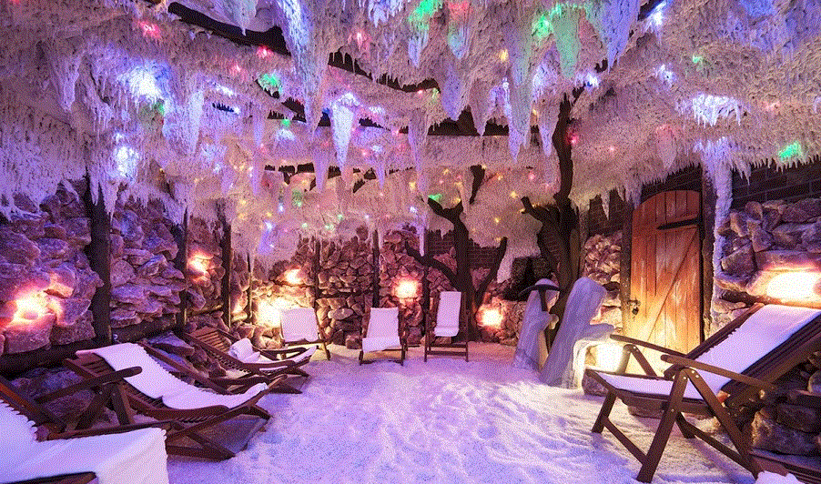
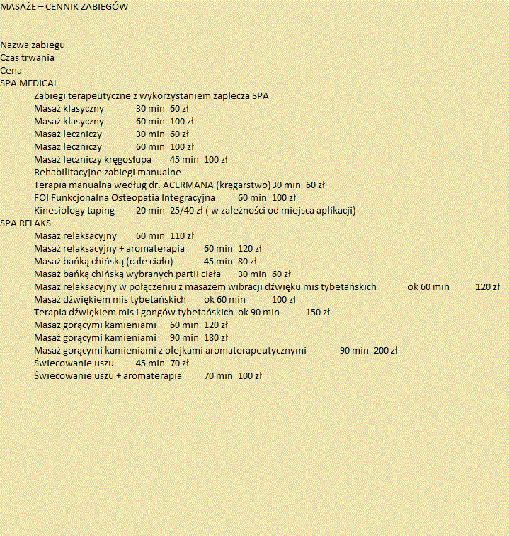

Szacunek dla wielowiekowej tradycji leczniczej wypracowanej w różnych częściach świata, wiara w moc natury oraz entuzjazm dla najnowszych technologii to fundament, na którym stworzyliśmy dla Ciebie najnowocześniejsze w Polsce centrum SPA & Wellness.
W jednym miejscu zatroszczysz się zarówno o ciało, jak i ducha oraz doświadczysz wielowymiarowych efektów dla zdrowia i urody, pod okiem zaufanych, certyfikowanych specjalistów. Z dbałością o każdy szczegół dążymy do wydobycia esencji w połączeniu nowoczesnych technologii z bogactwem metod pielęgnacyjnych i terapeutycznych wypracowanych na przestrzeni wieków w oparciu o uzdrawiającą moc płynącą z natury i potęgi jej żywiołów. W ramach kompleksu SPA & Wellness w Hotelu Maria w Wałbrzychu przygotowaliśmy m.in. baseny, sauny, grotę solną, gabinety masażu i kosmetyczne, a także strefę fitness.
Swoją wiedzę i doświadczenie przekładamy na holistyczne i indywidualne podejście do Człowieka. Łącząc luksus z prostotą oraz troską o Twoje potrzeby i intymność, w każdej chwili służymy Ci radą i pomocą, fachowo konsultując każdą aktywność. Wybierając z szerokiego pola możliwości zabiegów i programów pielęgnacyjnych, leczniczych, relaksujących i rehabilitacyjnych, wspólnie stworzymy indywidualny harmonogram dla Ciebie, w kierunku przywrócenia Tobie naturalnej równowagi.

